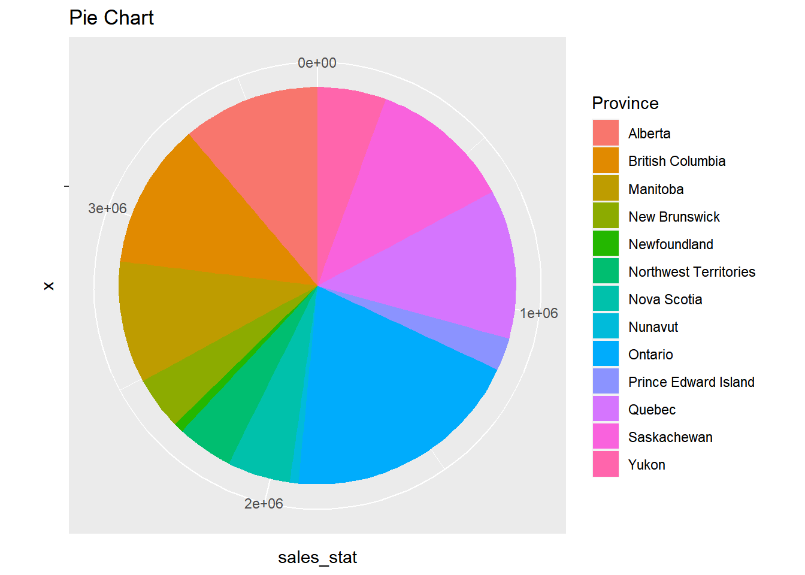

ggplot2数据可视化（一）
Boylad · 2018-10-21
使用ggplot2创建基础图形
library(ggplot2)
library(lattice)
library(dplyr)
##
## 载入程辑包：'dplyr'
## The following objects are masked from 'package:stats':
##
## filter, lag
## The following objects are masked from 'package:base':
##
## intersect, setdiff, setequal, union读入数据：
setwd("C:/Users/Boylad/Documents/mydata/R_for_Data_Science_Cookbook/")
superstore <- read.csv("superstore_sales.csv", header = TRUE)
superstore$Order.Date <- as.Date(superstore$Order.Date)
str(superstore)
## 'data.frame': 8399 obs. of 9 variables:
## $ Order.ID : int 3 293 293 483 515 515 613 613 643 678 ...
## $ Order.Date : Date, format: "2010-10-13" "2012-10-01" ...
## $ Order.Quantity : int 6 49 27 30 19 21 12 22 21 44 ...
## $ Sales : num 262 10123 245 4966 394 ...
## $ Profit : num -213.2 457.8 46.7 1199 30.9 ...
## $ Unit.Price : num 38.94 208.16 8.69 195.99 21.78 ...
## $ Province : chr "Nunavut" "Nunavut" "Nunavut" "Nunavut" ...
## $ Customer.Segment: chr "Small Business" "Consumer" "Consumer" "Corporate" ...
## $ Product.Category: chr "Office Supplies" "Office Supplies" "Office Supplies" "Technology" ...根据年份、月份和省份汇总销售额：
sum_price_by_province <- superstore %>%
filter(Order.Date > '2012-01-01') %>%
select(Sales, Province, Order.Date) %>%
group_by(Year_Month = as.Date(strftime(Order.Date, "%Y/%m/01")), Province) %>%
summarise(Total_Sales = sum(Sales))
## `summarise()` regrouping output by 'Year_Month' (override with `.groups` argument)
head(sum_price_by_province)
## # A tibble: 6 x 3
## # Groups: Year_Month [1]
## Year_Month Province Total_Sales
## <date> <chr> <dbl>
## 1 2012-01-01 Alberta 45518.
## 2 2012-01-01 British Columbia 17430.
## 3 2012-01-01 Manitoba 51071.
## 4 2012-01-01 New Brunswick 8085.
## 5 2012-01-01 Newfoundland 1666
## 6 2012-01-01 Northwest Territories 1845.抽取2012-07-01以来British Columbia和Alberta销售数据子集：
sample_sum <- sum_price_by_province %>%
filter(Year_Month > '2012-07-01',
Province %in% c('Alberta', 'British Columbia'))把Year_Month映射为x轴，Total_Sales映射为y轴，Province映射为colour，创建画布：
g <- ggplot(data = sample_sum,
mapping = aes(x=Year_Month, y=Total_Sales,
colour=Province)) + ggtitle("Pure Canvas")
g给画布添加几何对象：
g <- g + geom_point() + ggtitle("With Point Geometry")
g给画布添加几何对象：
g <- g + geom_line() + ggtitle("With Line Geometry")
g给画布添加标签和标题:
g <- g + xlab("Year Month") + ylab("Sale Amount") + ggtitle("Sale Amount By Region")
g在ggplot2中，数据绘图要求各种元素从数学空间映射到物理空间。我们可以使用简单的元素创建复杂的图形。首先我们需要创建一张画布，然后添加带有几何对象的图层，以及使用+记号把图层映射到画布。作为备选方案，我们可以使用qplot(quick plot，快速制图)产生ggplot2图形。qplot与函数plot类似：
qplot(Year_Month, Total_Sales, data = sample_sum, colour = Province,
geom = c("line", "point"), main = "qplot example")
改变美学映射
美学映射描述了数据变量是如何映射到图形的视觉属性的。首先，把Year_Month映射为x轴，Total_Sales映射为y轴，Province映射为colour，创建散点图：
g<- ggplot(data = sample_sum,
mapping = aes(x=Year_Month, y=Total_Sales,
colour=Province)) + ggtitle("With geom_point")
g + geom_point()给几何对象设置美学映射：
g2 <- ggplot(data = sample_sum) + geom_point(mapping = aes(x = Year_Month, y = Total_Sales, colour = Province)) + ggtitle('With Aesthetics Mapping')
g2设置几何对象的大小属性，调整散点图的点的大小：
g + geom_point(aes(size = 5)) + ggtitle("Adjust Point Size")根据不同的几何对象，调整美学属性：
g + geom_point(aes(size = 5, colour = "blue")) + geom_line()可以重新载入y轴的位置：
g + geom_point(aes(y = Total_Sales/10000)) + ggtitle("Override y-axes")移除美学属性
g + geom_point(aes(colour = NULL)) + ggtitle("Remove Aesthetics Property")为了改变几何对象的展示样式，我们可以使用，函数aes把数据变量映射为视觉特性。通过设置美学映射，我们可以改变元素的位置、大小、项的形状，以及给定几何对象的颜色。可以把一个美学属性映射为一个变量，或者设置图形参数的值。通过在aes中设置蓝色，图形创建了一个新的包含blue值的变量，而且图中的所有点都变成了同样的颜色，但并不是蓝色。另外，如果我们在图层中设置blue，点都变成了蓝色。
g + geom_point(aes(colour = "blue")) + ggtitle("Set Color to Blue in Aes Function")g + geom_point(colour = "blue") + ggtitle("Set color to Blue in Layer")
引入几何对象
几何对象是图形中展示的元素。可以用几何对象创建一条线图、一个条形图，或者一个箱线图。也可以把这些简单的几何对象和美学映射组合在一起，创建出更加专业的图形。首先，使用函数geo_point创建散点图：
g <- ggplot(data = sample_sum, mapping = aes(x=Year_Month, y=Total_Sales, col=Province)) + ggtitle("Scatter Plot")
g + geom_point()使用geom_line绘制线图：
g + geom_line(linetype = "dashed")使geom_bar制作堆积条形图：
g + geom_bar(stat = "identity", aes(fill = Province), position = "stack") + ggtitle("Stack Position")
当把position设置fill，可以绘制出带有归一化高度的堆积型条形图：
g + geom_bar(stat = "identity", aes(fill = Province), position = "fill") + ggtitle("Fill Position")当把position设置为dodge，并排放置条柱：
g + geom_bar(stat = "identity", aes(fill = Province), position = "dodge") + ggtitle("Dodge Position")可以使用函数geom_boxplot展示箱线图：
g + geom_boxplot(aes(x = Province)) + xlab("Province")+ ggtitle("Boxplot")可以使用geom_histogram创建一个柱状图：
set.seed(123)
norm.sample = data.frame(val = rnorm(1000))
ggplot(norm.sample, aes(val)) + geom_histogram(binwidth = 0.1) + ggtitle("Histogram")可以使用geom_density制作密度图：
ggplot(norm.sample, aes(val)) + geom_density() + ggtitle("Dentisy Plot")我们可以设置美学映射中的shape和size来改变点的形状和大小，线图中的linetype可以指定为blank,solid,dashed,dotted,dotdash,lingdash和twodash。ggplot2包并不提供任何专门的几何对象用于绘制饼图。但是我们可以使用函数coord_polar，创建极坐标下的堆积型饼状图，进而得到饼状图。首先，使用dplyr生成每个省份的总量销售额：
sample_stat <- sum_price_by_province %>% select(Province, Total_Sales) %>% group_by(Province) %>% summarise(sales_stat = sum(Total_Sales))
## Adding missing grouping variables: `Year_Month`
## `summarise()` ungrouping output (override with `.groups` argument)
head(sample_stat)
## # A tibble: 6 x 2
## Province sales_stat
## <chr> <dbl>
## 1 Alberta 416216.
## 2 British Columbia 440368.
## 3 Manitoba 368266.
## 4 New Brunswick 161298.
## 5 Newfoundland 29392.
## 6 Northwest Territories 169593.使用geom_bar创建条形图：
g <- ggplot(sample_stat, aes(x = "", y = sales_stat, fill = Province)) + geom_bar(stat = "identity") + ggtitle("Bar Plot")
g最后，使用函数coord_polar从堆积条形图中创建饼图：
g + coord_polar("y", start = 0) + ggtitle("Pie Chart")
除了把特定的变量映射为x轴或y轴，我们可以先对变量进行统计变换，然后再把变换后的变量映射到指定的位置。
执行变换
首先，从Alberta和British Columbia中过滤销售数据，创建名为sample_sum2的数据集：
sample_sum2 <- sum_price_by_province %>% filter(Province %in% c("Alberta", "British Columbia"))使用函数geom_poinnt和geom_smmoth，创建带有平滑回归曲线的线图：
g <- ggplot(data = sample_sum2, mapping = aes(x = Year_Month, y = Total_Sales, col = Province))
g + geom_point(size = 5) + geom_smooth() + ggtitle("Adding Smoother")
## `geom_smooth()` using method = 'loess' and formula 'y ~ x'另外可以使用函数stat_smooth该图形添加回归曲线：
g + geom_point() + stat_smooth()
## `geom_smooth()` using method = 'loess' and formula 'y ~ x'
我们可以在method参数中指定回归方法：
library(MASS)
##
## 载入程辑包：'MASS'
## The following object is masked from 'package:dplyr':
##
## select
g + geom_point() + geom_smooth(method = rlm) + ggtitle("Adding Robust Regresstion Line")
## `geom_smooth()` using formula 'y ~ x'
我们可以使用stats参数，添加用红点表示的月度平均销售额：
g + geom_point() + geom_point(stat = "summary", fun.y = "mean", colour = "red", size = 4)
## Warning: Ignoring unknown parameters: fun.y
## No summary function supplied, defaulting to `mean_se()`我们可以使用函数stat_summary获取汇总美学映射：
g + geom_point(size = 3) + geom_point(stat = "summary", fun.y = "mean", colour = "red", size = 4) + ggtitle("Adding Mean Points")
## Warning: Ignoring unknown parameters: fun.y
## No summary function supplied, defaulting to `mean_se()`为了添加回归曲线，我们既可以使用函数geo_smooth，也可以使用stat_smooth。完成后，ggplot2会在给定的数据点上执行回归分析，并添加半透明带表示的LOWESS(局部加权散点图平滑)线。或者我们也可以在函数geom_smooth中指定不同的回归模型。这里，我们首先加载了MASS程序包，然后给图形添加健壮回归曲线。最后，我们展示了如何根据x上的条件计算y的平均值。我们需要把参数stat传递给函数geom，然后指定stat=“summary”和fun.y=“mean”。最终，我们看到y的平均值在图中用红点表示。把参数stat传递给函数geom的另一种方法是，使用stat_summary生成平均值点。
调整图形尺度
除了给每个点或者几何对象设定美学映射，我们还可以使用尺度来控制变量到视觉属性上的映射。首先，设定size=Tootal_Sales,colour=Province,y=Province,取Year_Month为条件制作散点图。使用函数scale_size_continuous重新调整点的大小：
g <- ggplot(data = sample_sum, mapping = aes(x=Year_Month, y=Province, size = Total_Sales, colour = Province))
g + geom_point(aes(size = Total_Sales)) + scale_size_continuous(range = c(1, 10)) + ggtitle("Resize The Point") 使用函数scale_color_gradient，重新用渐变颜色给点上色：
g + geom_point(aes(colour = Total_Sales)) + scale_color_gradient() + ggtitle("Repaint The Point in Gradient Color")
使用Province调整点的形状：
g + geom_point(aes(shape=Province)) + scale_shape_manual(values = c(5, 10)) + ggtitle("Adjust The Shape of The Point")对于条形图，我们可以使用函数scale_fill_brewer填充每个条柱：
g2 <- ggplot(data = sample_sum, mapping = aes(x=Year_Month, y=Total_Sales, colour=Province))
g2 + geom_bar(stat = "identity", aes(fill=Province), position = "dodge") + scale_fill_brewer(palette=2) + ggtitle("Refill Bar Colour")还可以使用scale_y_continuous重新调整y轴的尺度：
g2 + geom_bar(stat = "identity", aes(fill = Province), position = "dodge") + scale_y_continuous(limits = c(1,100000), trans = "log10") + ggtitle("Rescale y Axes")因为需要不同的量级来表示数据对象的美学属性，我们可以使用scale_*，重新调整x轴、y轴、颜色、填充色，甚至形状。首先利用超市数据集创建包含几何对象的散点图，使用函数scale_size_*重新调整点的大小，使用range参数配置大小的取值范围，使用函数scale_color_*重新用渐变色给点上色，使用函数scale_shape_*重新定义点的形状。对于条形图我们可以使用函数scale_fill_*改变条柱的颜色，为了改变颜色方案，我们需指定palette参数值。另外，我们可以使用尺度函数scale_y_*重新调整y轴尺度，除了使用limits参数限定y轴尺度，我们还可以把trans参数传递给函数scale_y_continus，执行量级变换。
分面
当我们研究数据的时候，我们通常会比较不同组之间的数据。分面是一种允许用户针对数据子集创建图形的技术。首先，使用函数facet_wrap创建多个子图，其中使用Province变量作为条件：
g <- ggplot(data = sample_sum, mapping = aes(x=Year_Month, y=Total_Sales, colour = Province))
g + geom_point(size = 5) + facet_wrap(~Province) + ggtitle("Creat Multiple Subplots by Province")如果我们设定列数为1，图形 布局可以改变到垂直方向：
g + geom_point() + facet_wrap(~Province, ncol = 1) + ggtitle("Multiple Subplots Vertical Direction") 
为了按照更多的变量分面，可以使用函数facet_grid：
g <- ggplot(data = sample_sum, mapping = aes(x="Total Sales", y="Total Sales", col = Province))
g + geom_bar(stat = "identity", aes(fill=Province), position = "Stack") + facet_grid(Year_Month ~ Province) + ggtitle("facet_grid Example")另一个创建子图的强大的程序包是lattice。例如，要创建Province作为x值，Total Salesz作为y值，Year_Month作为分割条件的多个子图：
library(lattice)
barchart(Total_Sales ~ Province | Year_Month, data = sample_sum)
调整主题
除了使用美学映射决定几何对象的视觉属性以外，还可以调整背景颜色、网格线和主题内的其他非数据属性。我们可以使用不同的theme函数调整图形的主题：
g <- ggplot(data = sample_sum, mapping = aes(x=Year_Month, y=Total_Sales, colour = Province))
g + geom_point(size=5) + theme_bw() + ggtitle("theme_bw Example")g + geom_point(size=5) + theme_dark() + ggtitle("theme_dark Example")可以使用函数theme自由地设置主题:
g + geom_point(size=5) +
theme(axis.text = element_text(size = 12),
legend.background = element_rect(fill = "white"),
panel.grid.major = element_line(colour = "yellow"),
panel.grid.minor = element_blank(),
panel.background = element_rect(fill = "blue")) + ggtitle("Customized Theme")
组合图形
要创建对一个数据集的整体刻画，我们需要把多个独立的图形合成一个图形。首先，加载grid程序包并创建新的页面：
library(grid)
grid.newpage() #创建一块新的画布然后我们创建两个ggplot2图形：
g <- ggplot(data = sample_sum, mapping = aes(x=Year_Month, y=Total_Sales, colour = Province))
plot1 <- g + geom_point(size = 5) + ggtitle("Scatter Plot")
plot2 <- g + geom_line(size = 3) + ggtitle("Line Chart")接着，我们使用函数pushViewport，定义一个两列一行的可视区域：
pushViewport(viewport(layout = grid.layout(1, 2))) #带有布局信息的可视区域
最后，我们可以根据行列位置把图形放到可视区域中(函数viewport配置可视区域的位置)：
pushViewport(viewport(layout = grid.layout(1, 2)))
print(plot1, vp = viewport(layout.pos.row = 1, layout.pos.col = 1))
print(plot2, vp = viewport(layout.pos.row = 1, layout.pos.col = 2))
不用grid程序包的话，如果喜欢使用简单的语法，例如用par来合并多个图到一个图中，可以使用gridExtra程序包中的函数grid.arrange()。
library(gridExtra)
##
## 载入程辑包：'gridExtra'
## The following object is masked from 'package:dplyr':
##
## combine
grid.arrange(plot1, plot2, ncol = 2)以上内容整理自《R FOR DATA SCIENCE COOKBOOK》